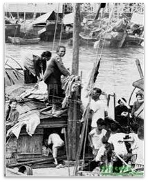
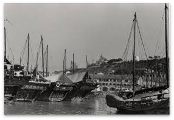

| 中葉葡萄牙人在澳門賃居 | 清朝末年，因清政府的腐敗無能使葡國逐步取得澳門的控制權 | 至1974年4月25日，葡萄牙新政府承認澳門是中國的領土 | ||
|  |  | |||
| 中葡兩國正式建交 | 中葡簽訂《中葡和好通商條約》後，澳門從葡萄牙人租佔地區轉變為葡萄牙的殖民地 | 自始西方國家的商人和教士開始紛紛來澳門進行貿易和傳教 |
1980年代，中葡兩國對澳門的前途進行探討
1987年，中葡兩地簽署《中葡聯合聲明》
1999年12月20日葡萄牙根據《中葡聯合聲明》，把澳門政權移交予中國，澳門正式回歸中國
澳門回歸後，實行一國兩制，「澳人治澳、高度自治」的政治方針
兩國友好合作關係持續發展，澳門亦見證了中葡間四百多年的關係演變史
澳門是中葡文化共冶一爐的地方,葡人進駐後與島上居民相形相依，例如通婚,幾個世紀以來，葡人在澳門與華人在包容及互相尊重的氣氛下相處,在十六、七世紀，澳門成為了貿易和傳教的中心，大大促進了東西方文化交流
葡萄牙的耶穌會在澳門創辦了聖保祿學院，成為天主教在亞洲的傳播中心,此外,耶穌會在澳辦醫院時亦傳入了西醫學,葡人來澳定居期間，興建了不少建築物，如玫瑰堂、主教山教堂，從而將西方建築藝術傳入澳門及內地,也將西方活字印刷術帶來了遠東
由於澳門獨特的地理位置和歷史背景，使澳門的文化除了具有中國文化傳統內涵之餘，還與葡萄牙文化特質相融共存。中葡兩地文化彼此互相影響和吸收，更甚的是，透過中葡兩族四百年來世代的通婚，形成了兩種不同文化的交流，從而構成了澳門文化的特色。在長期相互的影響、滲透、吸收、融合下，使這個細小的地方擁有不少文化與歷史的見證，並成為了貫通中西文化的橋樑。